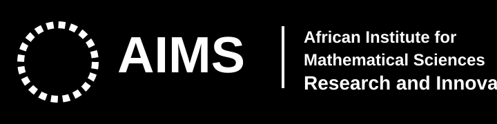

| Dataset | Module | Availability | Priority |
|---|---|---|---|
| EPD Clean Cooking LPG Distributors | Demand | Available | High |
| EPD Improved Cookstove Deployment | Demand | Available | High |
| EPD Biomass Pellet Production | Resources | Available | High |
| EPD Biogas Digester Registry | Transformation | Available | High |
| Mini-grid Deployment Pipeline | Transformation | Available | High |
| Solar Home Systems Deployment | Demand | Available | High |
| EV Charging Activity Dataset | Transport | Available | High |